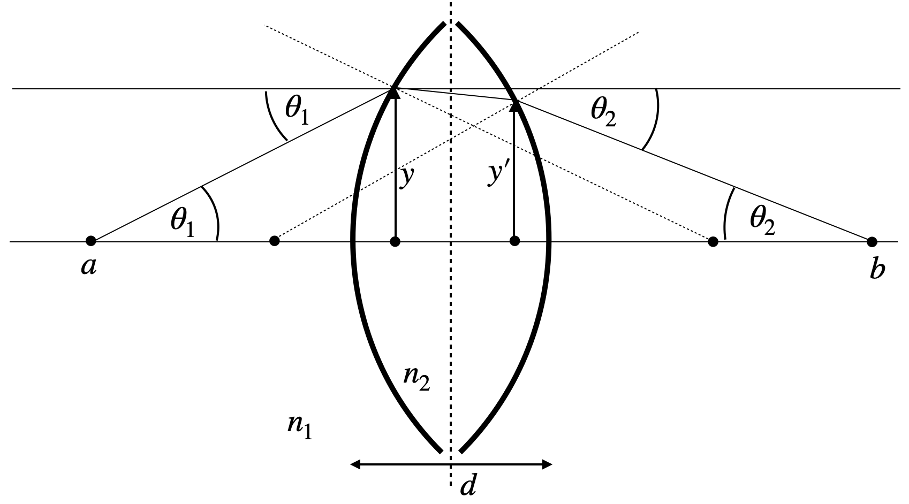
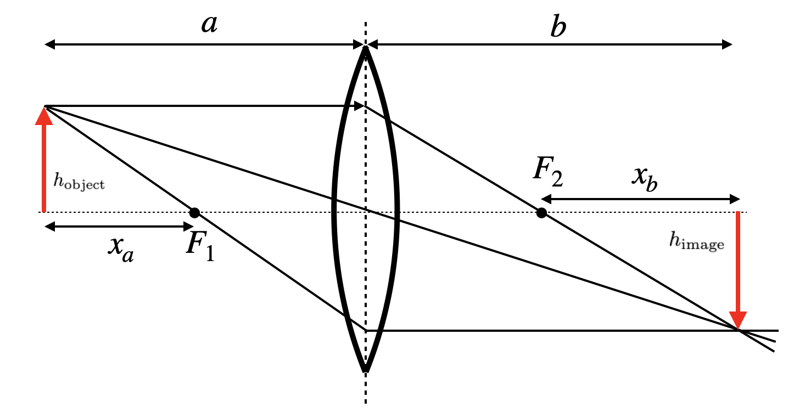
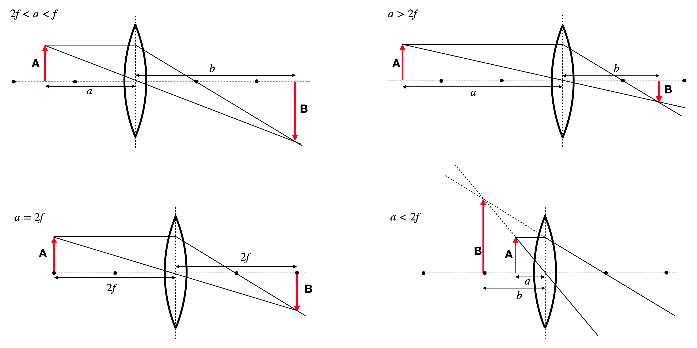

2 Theories for light
Light has been described through increasingly sophisticated theoretical frameworks throughout the history of physics. The simplest framework is Ray Optics or Geometrical Optics, which treats light as rays traveling along straight paths and applies geometrical principles to describe interactions with optical elements like lenses and mirrors. Moving beyond this approximation, Wave Optics introduces the wave nature of light, explaining phenomena such as interference and diffraction that ray optics cannot address. Electromagnetic Optics further refines our understanding by treating light as electromagnetic waves governed by Maxwell’s equations, providing a complete classical description of light-matter interactions. For intense light sources, Nonlinear Optics becomes essential, describing how materials respond nonlinearly to strong electromagnetic fields, giving rise to frequency conversion and other novel effects. Finally, at the most fundamental level, Quantum Optics treats light as consisting of photons—quantum mechanical particles exhibiting both wave and particle properties—essential for understanding phenomena like spontaneous emission, entanglement, and the quantum nature of light-matter interactions. This course will progressively build your understanding through these increasingly sophisticated frameworks.
2.0.1 Ray Optics
Ray optics, or geometric optics, provides a powerful framework for understanding light propagation when the wavelength is much smaller than the dimensions of optical elements involved. In this approach, light travels along straight lines called rays in homogeneous media, with well-defined paths that can be mathematically traced. This description serves as the foundation for analyzing many optical systems, from simple mirrors to complex microscopes and telescopes.
2.0.1.1 Fermat’s Principle: Integral and Differential Forms
Fermat’s Principle forms one of the foundations of ray optics, stating that light travels along the route that takes the total optical path length between any two points to an extremum (commonly a minimum). This optical path length, expressed mathematically as \(\int_C n(s)ds\), represents the effective distance light traverses through media of varying refractive indices. When this quantity is divided by the vacuum speed of light \(c_0\), it yields the total travel time required for light to journey between those points.
In its integral form:
\[\delta\int_C n(s)ds = 0\]
where \(n(s)\) is the refractive index along path \(C\) and \(ds\) is the differential path length.
The same principle can be expressed as a differential equation that describes how light bends in media with varying refractive indices:
\[\frac{d}{ds}\left(n\frac{d\mathbf{r}}{ds}\right) = \nabla n\]
This equation shows that rays bend toward regions of higher refractive index. In homogeneous media (\(\nabla n = 0\)), it simplifies to \(\frac{d^2\mathbf{r}}{ds^2} = 0\), confirming that light follows straight lines.
2.0.1.2 Optical Laws Derived from Fermat’s Principle
Reflection: At a planar interface, Fermat’s Principle directly yields the law of reflection:
\[\theta_i = \theta_r\]
where \(\theta_i\) is the angle of incidence and \(\theta_r\) is the angle of reflection, both measured from the normal to the surface.
Reflection Law Derivation
For reflection at a planar interface, we consider a ray traveling from point A to point B via reflection at point P on a mirror, as illustrated in Fig. \(\ref{fig-fermat-reflection}\). The total path length is \(L = |AP| + |PB|\).
Let’s establish a coordinate system where the mirror lies along the x-axis at y = 0. If point A is at coordinates \((-a, h_1)\) and point B is at \((b, h_2)\), with the reflection point P at \((x, 0)\), the total path length is:
\[L(x) = \sqrt{(x+a)^2 + h_1^2} + \sqrt{(b-x)^2 + h_2^2}\]
According to Fermat’s Principle, the actual path minimizes \(L\), so we differentiate with respect to \(x\) and set it equal to zero:
\[\frac{dL}{dx} = \frac{x+a}{\sqrt{(x+a)^2 + h_1^2}} - \frac{b-x}{\sqrt{(b-x)^2 + h_2^2}} = 0\]
Rearranging this equation:
\[\frac{x+a}{\sqrt{(x+a)^2 + h_1^2}} = \frac{b-x}{\sqrt{(b-x)^2 + h_2^2}}\]
Now, let’s interpret this geometrically. The angle of incidence \(\theta_i\) is the angle between the incident ray AP and the normal to the mirror (y-axis). Similarly, the angle of reflection \(\theta_r\) is the angle between the reflected ray PB and the normal.
From trigonometry: - \(\sin(\theta_i) = \frac{x+a}{\sqrt{(x+a)^2 + h_1^2}}\) - \(\sin(\theta_r) = \frac{b-x}{\sqrt{(b-x)^2 + h_2^2}}\)
Therefore, our minimization condition directly yields: \[\sin(\theta_i) = \sin(\theta_r)\]
Since both angles are measured in the same quadrant (from the normal to the mirror), this equality implies: \[\theta_i = \theta_r\]
This is the law of reflection: the angle of incidence equals the angle of reflection.
Law of Reflection: The angle of incidence equals the angle of reflection. \[\theta_i = \theta_r\]
Refraction: Between media with different refractive indices, Fermat’s Principle yields Snell’s law:
\[n_1\sin\theta_1 = n_2\sin\theta_2\]
where \(\theta_1\) and \(\theta_2\) are the angles of incidence and refraction, respectively.

Refraction Law Derivation
For refraction between two media with different refractive indices, we apply Fermat’s principle to find the path that minimizes the total optical path length. Consider a ray traveling from point A in medium 1 to point B in medium 2, with refraction occurring at point P on the interface, as illustrated in Fig. \(\ref{fig-fermat-refraction}\).
The total optical path length is:
\[L = n_1|AP| + n_2|PB|\]
To determine the exact refraction point P that minimizes this path, we establish a coordinate system with the interface along the x-axis at y = 0. If point A is at coordinates \((x_A, y_A)\) where \(y_A > 0\), and point B is at \((x_B, y_B)\) where \(y_B < 0\), with the refraction point P at \((x, 0)\), the total optical path length is:
\[L(x) = n_1\sqrt{(x-x_A)^2 + y_A^2} + n_2\sqrt{(x_B-x)^2 + y_B^2}\]
According to Fermat’s Principle, we minimize \(L\) by differentiating with respect to \(x\) and setting it equal to zero:
\[\frac{dL}{dx} = n_1\frac{x-x_A}{\sqrt{(x-x_A)^2 + y_A^2}} - n_2\frac{x_B-x}{\sqrt{(x_B-x)^2 + y_B^2}} = 0\]
Rearranging this equation:
\[\frac{n_1(x-x_A)}{\sqrt{(x-x_A)^2 + y_A^2}} = \frac{n_2(x_B-x)}{\sqrt{(x_B-x)^2 + y_B^2}}\]
From geometry, we can identify the sine of the angles of incidence and refraction: - \(\sin(\theta_1) = \frac{|x-x_A|}{|AP|} = \frac{|x-x_A|}{\sqrt{(x-x_A)^2 + y_A^2}}\) - \(\sin(\theta_2) = \frac{|x_B-x|}{|PB|} = \frac{|x_B-x|}{\sqrt{(x_B-x)^2 + y_B^2}}\)
Taking the sign into account based on our coordinate system, our minimization condition becomes:
\[n_1\sin(\theta_1) = n_2\sin(\theta_2)\]
This is Snell’s law, stating that the ratio of the sines of the angles of incidence and refraction equals the ratio of the refractive indices of the two media.
Snell’s Law: The ratio of the sines of the angles of incidence and refraction equals the reciprocal of the ratio of the refractive indices. \[n_1\sin\theta_1 = n_2\sin\theta_2\]
2.0.2 Differential Form of Fermat’s Law
To derive the differential ray equation from Fermat’s integral principle, we apply the calculus of variations. Starting with the optical path length functional:
\[L = \int_C n(s)ds = \int_{t_1}^{t_2} n(\mathbf{r}(t)) \left|\frac{d\mathbf{r}}{dt}\right| dt\]
Where \(\mathbf{r}(t)\) parametrizes the path. The term \(\left|\frac{d\mathbf{r}}{dt}\right|\) represents the differential element of arc length \(ds\) along the path, so \(ds = \left|\frac{d\mathbf{r}}{dt}\right| dt\). This parametrization allows us to convert the path integral over the curve \(C\) into a definite integral over the parameter \(t\). According to Fermat’s principle, the true path makes this integral stationary (δL = 0).
Consider a small variation in the path: \(\mathbf{r}(t) \rightarrow \mathbf{r}(t) + \epsilon\mathbf{\eta}(t)\) where \(\mathbf{\eta}(t_1) = \mathbf{\eta}(t_2) = 0\) (fixed endpoints). Expanding the variation of the integral to first order in ε:
\[\delta L = \frac{d}{d\epsilon}\bigg|_{\epsilon=0} \int_{t_1}^{t_2} n(\mathbf{r}(t) + \epsilon\mathbf{\eta}(t)) \left|\frac{d}{dt}(\mathbf{r}(t) + \epsilon\mathbf{\eta}(t))\right| dt\]
Using the chain rule and reparametrizing with arc length \(s\) (where \(\frac{d\mathbf{r}}{ds}\) is a unit vector), the stationarity condition leads to:
\[\int_C \left[ \nabla n \cdot \mathbf{\eta} - \frac{d}{ds}\left(n\frac{d\mathbf{r}}{ds}\right) \cdot \mathbf{\eta} \right] ds = 0\]
Since this must hold for any variation \(\mathbf{\eta}\), we obtain the Euler-Lagrange equation:
\[\frac{d}{ds}\left(n\frac{d\mathbf{r}}{ds}\right) = \nabla n\]
This shows that rays bend toward regions of higher refractive index, directly analogous to how a mechanical particle’s trajectory is affected by a potential field in classical mechanics.
SELFOC Gradient Index Lens
SELFOC (SELf-FOCusing) gradient-index fibers are interesting optical elements that guide light through a continuous refraction process rather than discrete refractions at interfaces. Let me demonstrate how Fermat’s principle can be used to determine the ray paths in these fibers. A SELFOC fiber has a radially varying refractive index, typically following a parabolic profile:
\[n(r) = n_0\left(1 - \frac{1}{2}\alpha^2 r^2\right)\]
where: - \(n_0\) is the refractive index at the central axis - \(r\) is the radial distance from the axis - \(\alpha\) is the gradient constant that determines how quickly the index decreases with radius
2.0.3 Fermat’s Principle in Gradient-Index Media
For a medium with a spatially varying refractive index, Fermat’s principle states that light follows the path that minimizes the optical path length:
\[\delta \int_C n(r) ds = 0\]
This yields the differential equation:
\[\frac{d}{ds}\left(n\frac{d\mathbf{r}}{ds}\right) = \nabla n\]
2.0.4 Deriving the Ray Path Equation
For our parabolic index profile, the gradient of the refractive index is:
\[\nabla n = \frac{\partial n}{\partial r}\hat{\mathbf{r}} = -n_0\alpha^2 r \hat{\mathbf{r}}\]
Using cylindrical coordinates with z along the fiber axis, and assuming the paraxial approximation (rays make small angles with the z-axis), we can simplify the ray equation to:
\[\frac{d^2r}{dz^2} + \alpha^2 r = 0\]
This is the equation for a harmonic oscillator, which has the solution:
\[r(z) = r_0 \cos(\alpha z) + \frac{\theta_0}{\alpha} \sin(\alpha z)\]
where \(r_0\) is the initial radial position and \(\theta_0\) is the initial angle of the ray with respect to the fiber axis.

2.0.5 Fermat’s Principle and the “F=ma” Analogy in Optics
The differential form of Fermat’s principle:
\[\frac{d}{ds}\left(n\frac{d\mathbf{r}}{ds}\right) = \nabla n\]
reveals a profound analogy with Newton’s Second Law of motion:
\[\mathbf{F} = m\mathbf{a} = m\frac{d^2\mathbf{r}}{dt^2}\]
This comparison, sometimes called “F=ma optics,” illustrates how light rays follow trajectories mathematically similar to those of mechanical particles. To see this connection more clearly, we can expand the ray equation as:
\[n\frac{d^2\mathbf{r}}{ds^2} + \frac{d\mathbf{r}}{ds}\frac{dn}{ds} = \nabla n\]
Using the chain rule, \(\frac{dn}{ds} = \nabla n \cdot \frac{d\mathbf{r}}{ds}\), and denoting \(\mathbf{t} = \frac{d\mathbf{r}}{ds}\) as the unit tangent vector along the ray:
\[n\frac{d^2\mathbf{r}}{ds^2} + (\nabla n \cdot \mathbf{t})\mathbf{t} = \nabla n\]
Rearranging to isolate the ray curvature term:
\[n\frac{d^2\mathbf{r}}{ds^2} = \nabla n - (\nabla n \cdot \mathbf{t})\mathbf{t}\]
The right side represents the component of \(\nabla n\) perpendicular to the ray direction, which we can denote as \((\nabla n)_\perp\). Therefore:
\[\frac{d^2\mathbf{r}}{ds^2} = \frac{1}{n}(\nabla n)_\perp\]
This equation reveals that the ray curvature is proportional to the perpendicular component of the refractive index gradient and inversely proportional to the refractive index itself. Crucially, this shows that light rays bend toward regions of higher refractive index, not away from them.
This behavior explains many optical phenomena:
- Light bending toward the normal when entering a medium with higher refractive index
- Light guiding in optical fibers where light remains confined in the higher-index core
- Formation of mirages where light curves toward the denser air near the ground
- Focusing in gradient-index (GRIN) lenses where the refractive index decreases radially from the center
While the mathematical form resembles Newton’s equation for particle motion, the analogy must be carefully interpreted: unlike particles that accelerate toward lower potential energy, light rays curve toward regions of higher refractive index.

2.0.6 Lenses
The most important optical elements are lenses, which come in many different flavors. They consist of curved surfaces, which most commonly have the shape of a part of a spherical cap. It is, therefore, useful to have a look at the refraction at spherical surfaces.
2.0.6.1 Refraction at spherical surfaces
For our calculations of the refraction at spherical surfaces, we consider the sketch below.

To derive an imaging equation for a lens, we aim to calculate the distance \(b\) and angle \(\theta_2\) at which a ray crosses the optical axis, given its origin at distance \(a\) and angle \(\theta_1\). We begin with Snell’s law for the geometry:
\[n_{1}\sin(\alpha+\theta_1)=n_{2}\sin(\alpha-\theta_2)\]
We define key relationships:
\[\sin(\alpha)=\frac{y}{R}, \quad \tan(\theta_1)=\frac{y}{a}, \quad \tan(\theta_2)=\frac{y}{b}\]
To simplify this, we employ the paraxial approximation, which assumes all angles are small. This allows us to use first-order approximations of trigonometric functions, effectively linearizing them:
\[\sin(\theta) \approx \theta+ O(\theta^{3}), \quad \tan(\theta) \approx \theta + O(\theta^{3}),\quad \cos(\theta)\approx 1 + O(\theta^{2})\]
This approach, common in optics, significantly simplifies our calculations while maintaining accuracy for most practical scenarios involving lenses.
With the help of these approximations we can write Snell’s law for the curved surface as
\[n_1(\alpha+\theta_1)=n_2(\alpha-\theta_2).\]
With some slight transformation which you will find in the video of the online lecture we obtain, therefore,
\[\theta_2=\frac{n_2-n_1}{n_2 R}y -\frac{n_1}{n_2}\theta_1,\]
which is a purely linear equation in \(y\) and \(\theta_1\).
Paraxial Approximation
The paraxial approximation is a fundamental simplification in optics that assumes all angles are small. This allows us to use linear approximations for trigonometric functions, significantly simplifying calculations while maintaining accuracy for most practical scenarios involving lenses.
To visualize the validity of this approximation, let’s examine two plots:
- The first plot compares sin(θ) (blue line) with its linear approximation θ (red dashed line) for angles ranging from 0 to π/2 radians.
- The second plot shows the absolute error between sin(θ) and θ.
These plots demonstrate that:
- For small angles (roughly up to 0.5 radians or about 30 degrees), the approximation is very close to the actual sine function.
- The error increases rapidly for larger angles, indicating the limitations of the paraxial approximation.
In most optical systems, especially those involving lenses, the angles of incident and refracted rays are typically small enough for this approximation to be valid. However, it’s important to be aware of its limitations when dealing with wide-angle optical systems or scenarios where precision is critical.

Consider light originating from a point at distance \(y\) from the optical axis. We’ll analyze two rays: one traveling parallel to the optical axis and hitting the spherical surface at height \(y\), and another incident at \(y=0\).

Applying our derived formula to these two cases:
For the parallel ray (\(\theta_1=0\)):
\[\theta_2=\frac{n_2-n_1}{n_2}\frac{y}{R}\] \[\theta_2=\frac{y+\Delta y}{b}\]
Equating these expressions:
\[\frac{y+\Delta y}{b}=\frac{n_2-n_1}{n_2}\frac{y}{R}\]
For the ray through the center (\(y=0\)):
\[n_2\frac{\Delta y}{b}=n_1\frac{y}{a}\]
Combining these equations yields the imaging equation for a curved surface:
\[\frac{n_1}{a}+\frac{n_2}{b}=\frac{n_2-n_1}{R}\]
We can define a new quantity, the focal length, which depends only on the properties of the curved surface:
\[f=\frac{n_2}{n_2-n_1}R\]
Imaging Equation for Spherical Refracting Surface
The sum of the inverse object and image distances equals the inverse focal length of the spherical refracting surface:
\[\frac{n_1}{a}+\frac{n_2}{b}\approx\frac{n_2}{f}\]
where the focal length of the refracting surface is given by:
\[f=\frac{n_2}{n_2-n_1}R\]
in the paraxial approximation.
2.0.7 Thin lens
In our previous calculation we have found a linear relation between the incident angle \(\theta_1\) with the optical axis, the incident height of the ray \(y\) and the outgoing angle \(\theta_2\):
Analyzing refraction in a lens involves two spherical surfaces. Light initially travels from a medium with refractive index \(n_1\) into the lens material with index \(n_2\). The first surface’s radius, \(R_1\), is typically positive for a convex surface facing the incident light.
At the second surface, the outgoing angle from the first refraction becomes the incident angle for the second refraction. Here, light travels from \(n_2\) back into \(n_1\). The radius \(R_2\) of this surface often has a negative value in a converging lens due to its opposite curvature relative to the optical axis.

For thin lenses, where the thickness \(d\) is much smaller than \(R_1\) and \(R_2\) (\(d \ll R_1, R_2\)), we can simplify our analysis. We assume that the height of the ray at both surfaces is approximately equal (\(y \approx y'\)), neglecting the displacement inside the lens.
This simplification allows us to treat all refraction as occurring on a single plane at the lens center, known as the principal plane. This concept, illustrated by the dashed line in the figure, greatly simplifies optical calculations and ray tracing for thin lenses.
The radii’s sign convention (positive for convex surfaces facing incident light, negative for concave) and this two-surface analysis form the basis for the thin lens formula. This formula relates object distance, image distance, and focal length, encapsulating the lens’s imaging properties.
The result of the above calculation is leading to the imaging equation for the thin lens.
Imaging Equation for Thin Lens
The sum of the inverse object and image distances equals the inverse focal length of the thin lens:
\[\frac{1}{a}+\frac{1}{b}\approx\frac{n_2-n_1}{n_1}\left (\frac{1}{R_1}-\frac{1}{R_2}\right )=\frac{1}{f}\]
Lensmaker equation
The focal length of a thin lens is calculated by the lensmaker equation: \[f=\frac{n_1}{n_2-n_1}\left ( \frac{R_1 R_2}{R_2 -R_1}\right)\]
in the paraxial approximation.
2.0.7.1 Image Construction
Images of objects can be now constructed if we refer to rays which do not emerge from a position on the optical axis only. In this case, we consider three different rays (two are actually enough). If we use as in the case of a concave mirror a central and a parallel ray, we will find a position where all rays cross on the other side. The conversion of the rays is exactly the same as in the case of a spherical mirror. The relation between the position of the object and the image along the optical axis is described by the imaging equation.

Similar to the concave mirror, we may now also find out the image size or the magnification of the lens.
Magnification of a Lens
The magnification is given by:
\[M=\frac{h_{\rm image}}{h_{\rm object}}=-\frac{b}{a}=\frac{f}{f-a}\]
where the negative sign is the result of the reverse orientation of the real images created by a lens.
According to our previous consideration \(M<0\) corresponds to a reversed image, while it is upright as the object for \(M>0\). We, therefore, easily see the following:
| Object Position | Image Characteristics | Magnification (M) | Image Type |
|---|---|---|---|
| \(a < f\) | Upright and magnified | \(M > 0\) | Virtual |
| \(f < a < 2f\) | Reversed and magnified | \(M < -1\) | Real |
| \(a = 2f\) | Reversed, same size | \(M = -1\) | Real |
| \(a > 2f\) | Reversed and shrunk | \(-1 < M < 0\) | Real |
| \(a = f\) | Appears at infinity | \(M = \infty\) | - |
The image below illustrates the construction of images in 4 of the above cases for a bi-convex lens, including the generation of a virtual image.
|  |
|---|
| Fig.: Image construction on a biconvex lens with a parallel and a central ray for different object distances. |
Matrix Optics
The above derived equations for a single spherical surface yield a linear relation between the input variables \(y_1\) and \(\theta_1\) and the output variables \(y_2\) and \(\theta_2\). The linear relation yields a great opportunity to express optical elements in terms of linear transformations (matrices). This is the basis of matrix optics. The matrix representation of a lens is given by
\[\begin{pmatrix} y_2 \\ \theta_2 \end{pmatrix} = \begin{pmatrix} 1 & 0 \\ -\frac{1}{f} & 1 \end{pmatrix} \begin{pmatrix} y_1 \\ \theta_1 \end{pmatrix}\]
where the matrix is called the ABCD matrix of the lens. Due to the linearization of Snells law w can write down more generally
\[\begin{pmatrix} y_2 \\ \theta_2 \end{pmatrix} = \begin{pmatrix} A & B \\ C & D \end{pmatrix} \begin{pmatrix} y_1 \\ \theta_1 \end{pmatrix}\]
and one can obtain a Matrix for all types of optical elements such as free space of dustance \(d\).
\[\begin{bmatrix} A & B\\ C & D \end{bmatrix} = \begin{bmatrix} 1 & d\\ 0 & 1 \end{bmatrix} \]
Here are some useful matrices for optical elements:
\[ \mathbf{M}=\left[\begin{array}{ll} 1 & d \\ 0 & 1 \end{array}\right] \tag{Free space} \]
\[ \mathbf{M}=\left[\begin{array}{cc} 1 & 0 \\ 0 & \frac{n_1}{n_2} \end{array}\right] \tag{Planar interface} \]
\[ \mathbf{M}=\left[\begin{array}{cc} 1 & 0 \\ -\frac{\left(n_2-n_1\right)}{n_2 R} & \frac{n_1}{n_2} \end{array}\right] \tag{Spherical Boundary} \]
\[ \mathbf{M}=\left[\begin{array}{cc} 1 & 0 \\ -\frac{1}{f} & 1 \end{array}\right] \tag{Tin Lens} \]
If we have now a system of optical elements, we can multiply the matrices of the individual elements to obtain the matrix of the whole system.
\[ \rightarrow \mathrm{M}_1 \rightarrow \mathrm{M}_2 \rightarrow \mathrm{M}_N \rightarrow \mathrm{M}=\mathbf{M}_N \ldots \mathrm{M}_2 \mathbf{M}_1 \text {. } \]
This is a very powerful tool to analyze optical systems.
2.1 Fermat’s Principle for Spherical Surfaces
The power of Fermat’s principle becomes particularly evident when applied to spherical refracting surfaces. Consider a spherical boundary of radius \(R\) between two media with refractive indices \(n_1\) and \(n_2\). According to Fermat’s principle, light will follow the path that minimizes the total optical path length.
When we apply Fermat’s principle to a spherical surface, we can derive the laws of refraction. Consider a spherical boundary between two media with refractive indices \(n_1\) and \(n_2\). We’ll place our coordinate system so that the spherical surface intersects the x-axis at x=0, with radius R and its center at position (R,0) to the right.
For a point P on the spherical surface at height y from the optical axis, the total optical path length from object point A at (-a,0) to image point B at (b,0) is:
\[L = n_1|AP| + n_2|PB|\]
where: \[|AP| = \sqrt{a^2 + y^2}\] \[|PB| = \sqrt{b^2 + y^2}\]
According to Fermat’s principle, light follows the path where this length is stationary:
\[\frac{dL}{dy} = n_1\frac{d|AP|}{dy} + n_2\frac{d|PB|}{dy} = 0\]
Computing these derivatives:
\[\frac{d|AP|}{dy} = \frac{y}{|AP|}\] \[\frac{d|PB|}{dy} = \frac{y}{|PB|}\]
Substituting into our condition:
\[n_1\frac{y}{|AP|} + n_2\frac{y}{|PB|} = 0\]
This equation is incorrect. The right-hand side should not be zero because we need to account for the geometry of the spherical surface. The correct form includes the effect of the surface normal:
\[n_1\frac{y}{|AP|} + n_2\frac{y}{|PB|} = \frac{(n_2-n_1)y}{R}\]
This correction comes from the fact that at point P, the normal to the spherical surface makes an angle α with the optical axis, where sin(α) ≈ y/R in the paraxial approximation.
Dividing by y (assuming y≠0):
\[\frac{n_1}{|AP|} + \frac{n_2}{|PB|} = \frac{n_2-n_1}{R}\]
In the paraxial approximation, we can use |AP| ≈ a and |PB| ≈ b, yielding:
\[\frac{n_1}{a} + \frac{n_2}{b} = \frac{n_2-n_1}{R}\]
This is the correct imaging equation for a spherical refracting surface.
The elegance of Fermat’s principle is preserved, as it still naturally produces the same result as our geometric derivation, once we properly account for the geometry of the refracting surface.
Deriving the Thin Lens Equation from Fermat’s Principle
To derive the thin lens equation, we apply Fermat’s principle to the two spherical surfaces that make up a lens. Consider a lens with refractive index \(n_2\) in a medium of index \(n_1\), with surface radii \(R_1\) and \(R_2\).
The total optical path for a ray passing through the lens at height \(y\) from the optical axis is: - Path from object to first surface: \(n_1 s_1\) - Path through the lens: \(n_2 s_2\) - Path from second surface to image: \(n_1 s_3\)
For a thin lens, the optical path length simplifies to:
\[L(y) = n_1 \sqrt{a^2 + y^2} + n_2 d(y) + n_1 \sqrt{b^2 + y^2}\]
Where \(d(y)\) is the thickness of the lens at height \(y\), which can be approximated as:
\[d(y) \approx d_0 + \frac{y^2}{2}\left(\frac{1}{R_1}-\frac{1}{R_2}\right)\]
Applying Fermat’s principle (\(\frac{dL}{dy} = 0\)) and using the paraxial approximation:
\[\frac{n_1 y}{\sqrt{a^2 + y^2}} + n_2 y \left(\frac{1}{R_1}-\frac{1}{R_2}\right) + \frac{n_1 y}{\sqrt{b^2 + y^2}} = 0\]
In the paraxial limit (\(y \ll a, y \ll b\)), this becomes:
\[\frac{n_1 y}{a} + n_2 y \left(\frac{1}{R_1}-\frac{1}{R_2}\right) + \frac{n_1 y}{b} = 0\]
Dividing by \(y\) and rearranging:
\[\frac{1}{a} + \frac{1}{b} = \frac{n_2-n_1}{n_1}\left(\frac{1}{R_1}-\frac{1}{R_2}\right) = \frac{1}{f}\]
This is the thin lens equation with the focal length given by the lensmaker’s equation:
\[f = \frac{n_1}{n_2-n_1}\left(\frac{R_1 R_2}{R_2-R_1}\right)\]
Thus, both the imaging equation and the lensmaker equation emerge naturally from Fermat’s principle applied to the geometry of a thin lens, showing that light follows paths of equal optical length from object to image when passing through any part of the lens.
From a wave perspective, what makes a lens focus light to a point is that all paths from object to image through any part of the lens have equal optical path lengths (to first order in the paraxial approximation), ensuring constructive interference at the image point.